Naturaleza y aventura
Senderos, cerros y caminos para disfrutar el paisaje a otro ritmo.
ExplorarExperiencias · Valle de Yokavil
Experiencias que conectan naturaleza, historia y tradición en el corazón del Valle de Yokavil.
Descubrí las experiencias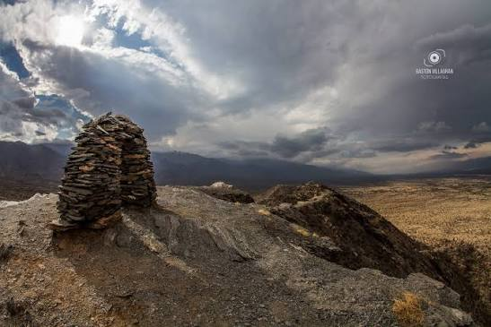
Cuatro maneras de encontrarse con el valle
Cada rincón de Santa María guarda una historia, un paisaje y una experiencia esperando ser descubiertos.
Senderos, cerros y caminos para disfrutar el paisaje a otro ritmo.
Explorar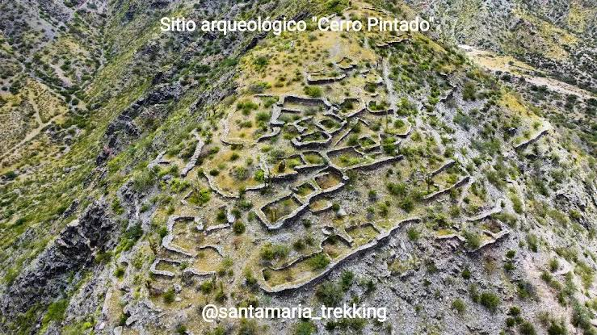
Un territorio donde las huellas de antiguos pueblos siguen presentes.
Explorar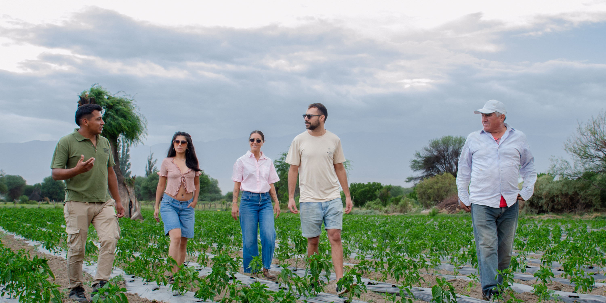
Productos regionales y recetas que cuentan la identidad de Santa María.
Explorar
Oficios, encuentros y saberes que se transmiten de generación en generación.
ExplorarNaturaleza y aventura
Descubrí los paisajes del Valle de Yokavil caminando sus senderos, recorriendo sus caminos y acercándote a la inmensidad de los cerros. Cada salida propone otra forma de habitar el territorio.
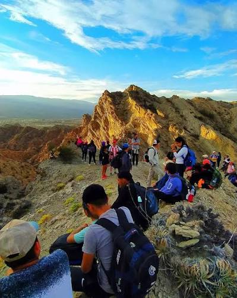
Caminatas para descubrir quebradas, cerros y vistas abiertas del valle.
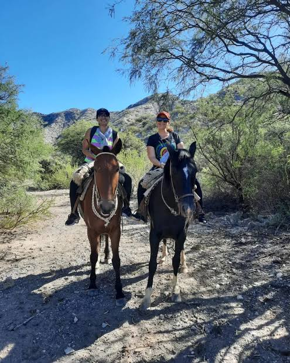
Recorridos a caballo para conectar con el paisaje y sus caminos rurales.
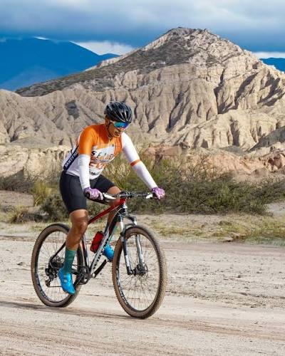
Una invitación a explorar el entorno en bicicleta, con tiempo para cada paisaje.
Historia y arqueología
El paisaje de Santa María conserva testimonios de las comunidades que habitaron este territorio. Sitios arqueológicos y caminos históricos permiten acercarse a una historia milenaria, en diálogo permanente con el valle.
Entre cerros, poblados y antiguos senderos, cada visita invita a observar con atención y conocer el legado de los pueblos originarios.
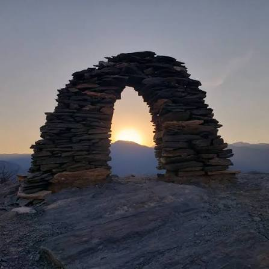
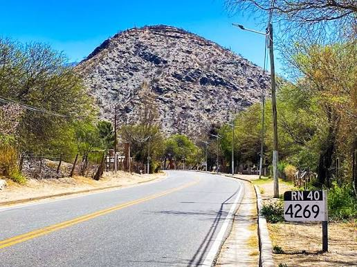

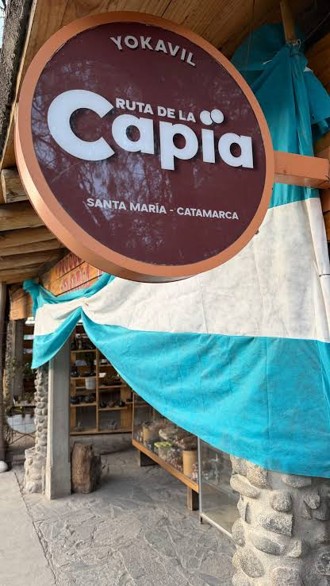
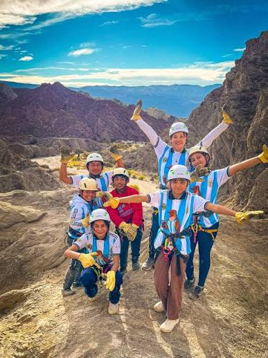
Sabores del Yokavil
Los sabores regionales acercan a la historia productiva de Santa María y a los saberes de quienes trabajan la tierra. Recetas transmitidas en familia y productos artesanales son parte de la experiencia de conocer el valle.
La Ruta de la Capia invita a descubrir uno de los emblemas gastronómicos locales y a encontrarse con quienes mantienen viva su elaboración.
Cultura y tradiciones
Los oficios artesanales expresan la creatividad y el conocimiento heredado de la comunidad. Tejidos, piezas hechas a mano y encuentros en las ferias acercan al visitante a la vida cultural de Santa María.
Recorrer los puestos y conversar con sus artesanos permite conocer el trabajo detrás de cada pieza y llevarse un recuerdo con identidad local.
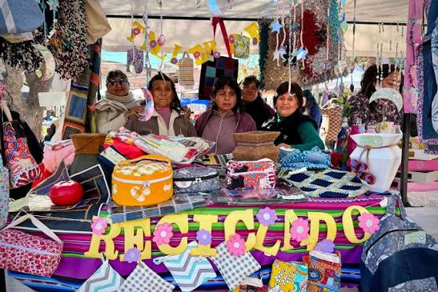
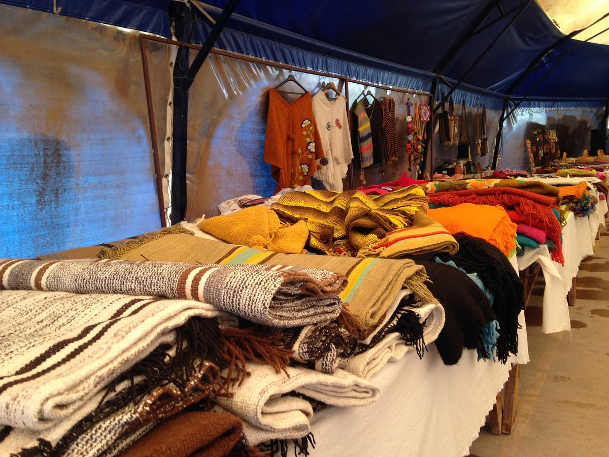
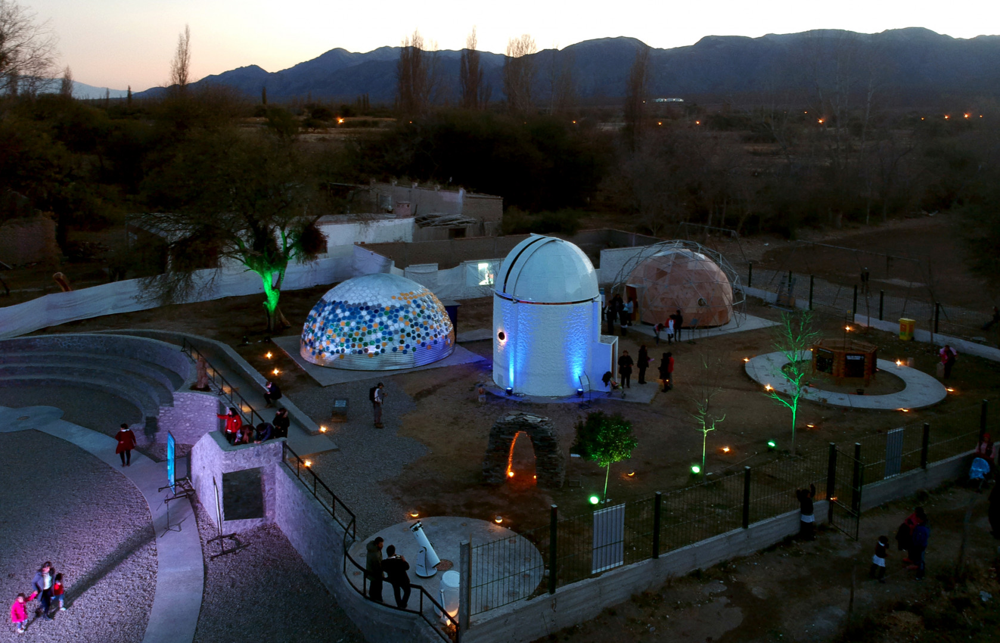